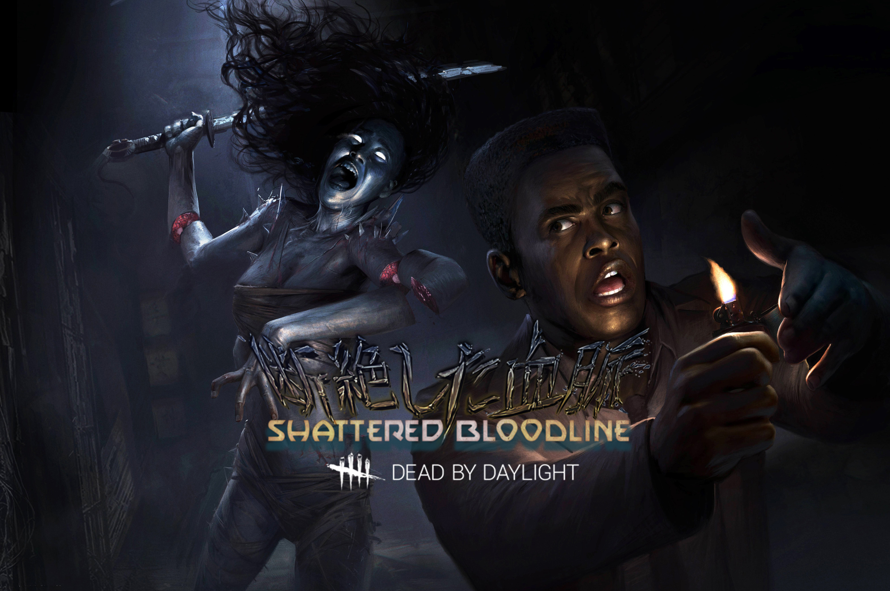

Глава 9:
Shattered Dloodline


Адам родился в Ямайке, в городе под названием Роллингтон-Таун, что в Кингстоне. Его отец погиб в автокатастрофе, так что двухлетнего мальчика взял себе на опеку дядя. Дядя Адама был жестким, но справедливым человеком, который научил его ценить образование.
В Кингстонском колледже Адам открыл для себя публикации отца, что дало начало дальнейшему увлечению литературой. А все остальные на кампусе фанатели от спорта. Поэтому скромный студент, скрывшийся за книжками, стал идеальной целью для издевательств. Характер Адама закалялся, он научился парировать усмешки.
Рин была единственным ребенком в семье Ямаока. Она росла в пыльных залах старого традиционного дома в Кагаве. Она изучала Образование в Такаматсу, частном университете, плата за который тяжким бременем легла на и без того шаткое финансовое состояние семьи. В тот год её мать серьёзно заболела, и счета начали копиться. Рин устроилась на неполный рабочий день в тщетной попытке облегчить этот груз.
Её отец влез в долги, которые без конца росли. Он стал работать двойную смену в надежде получить повышение. Именно тогда он начал плохо спать. Шёпот, раздающийся из тьмы, мог не давать ему спать всю ночь, напоминая о безнадежности ситуации. Истощенный, Он начал терять ощущение реальности. Он боролся и, стараясь отрицать то, что голос шепчет ночи напролёт, отец Рин решился на отчаянный шаг. Он встретился с руководством и объяснил свою ситуацию. Он молил о повышении, поощрении, хотя бы отпуске - о чём угодно.


Особая способность:
Дух может использовать свою Силу — Преследование Ямаоки, чтобы ворваться в бесплотный мир и появиться в другом месте.
Нажмите и держите клавишу Силы для заряда. Дух отделится от своего тела, оставляя за собой лишь физическую оболочку.
Пока Преследование Ямаоки активно:
Дух может переместиться в другое место, двигаясь при этом немного быстрее в течение короткого времени. Она не может просачиваться сквозь стены и препятствия.
Дух покидает физический мир, теряя из виду всех Выживших. Однако она все равно видит следы-трещины, которые Выжившие оставляют за собой.
Дух издаст звук, обозначая свое текущее местоположение.
Как только Сила заканчивается, Дух еще на некоторое время сохраняет прирост к скорости передвижения, а ее физическая оболочка превращается в прах.
Использование Преследования Ямаоки расходует шкалу Силы Духа. Шкала снова восполнится со временем. Шкала должна быть полностью заполнена, перед тем, как Сила может быть использована.
Персонажи
Адам Фрэнсис
В Кингстонском колледже Адам открыл для себя публикации отца, что дало начало дальнейшему увлечению литературой. А все остальные на кампусе фанатели от спорта. Поэтому скромный студент, скрывшийся за книжками, стал идеальной целью для издевательств. Характер Адама закалялся, он научился парировать усмешки.
Читать дальше...
Личные навыки:


Дух
Её отец влез в долги, которые без конца росли. Он стал работать двойную смену в надежде получить повышение. Именно тогда он начал плохо спать. Шёпот, раздающийся из тьмы, мог не давать ему спать всю ночь, напоминая о безнадежности ситуации. Истощенный, Он начал терять ощущение реальности. Он боролся и, стараясь отрицать то, что голос шепчет ночи напролёт, отец Рин решился на отчаянный шаг. Он встретился с руководством и объяснил свою ситуацию. Он молил о повышении, поощрении, хотя бы отпуске - о чём угодно.
Читать дальше...


Особая способность:
"Преследование Ямаоки"
Нажмите и держите клавишу Силы для заряда. Дух отделится от своего тела, оставляя за собой лишь физическую оболочку.
Пока Преследование Ямаоки активно:
Дух может переместиться в другое место, двигаясь при этом немного быстрее в течение короткого времени. Она не может просачиваться сквозь стены и препятствия.
Дух покидает физический мир, теряя из виду всех Выживших. Однако она все равно видит следы-трещины, которые Выжившие оставляют за собой.
Дух издаст звук, обозначая свое текущее местоположение.
Как только Сила заканчивается, Дух еще на некоторое время сохраняет прирост к скорости передвижения, а ее физическая оболочка превращается в прах.
Использование Преследования Ямаоки расходует шкалу Силы Духа. Шкала снова восполнится со временем. Шкала должна быть полностью заполнена, перед тем, как Сила может быть использована.
Dead By Daylight
Контакты:
Помощь:
предложения отправлят сюда
@mail: dbd-help@mail.ru
D
E
A
D
E
A
D
B
Y
Y
D
A
Y
L
I
G
H
T
A
Y
L
I
G
H
T